Take-home Exercise 1
1. Overview
Age-sex pyramid, also known as population pyramid, is an analytical visualization commonly used to reveal the distribution of a population by age group and gender. This take-home exercise aims to reveal the demographic structure in nine selected planning area of Singapore by using the population pyramid charts.
The dataset containing the demographics of Singapore residents for June 2022 was obtained from Department of Statistics. The data was then imported into Tableau desktop for data processing and visualisation.
2. Design Sketch

3. Data Wrangling
3.1 Re-group AG into AG (10years)
From the age group distribution in Singapore population, it can be observed that there is a big number of 19 bins where each bin covers an age range of 5 years. The bins may become narrow or compressed when fitted into a small-multiple plot which makes identifying of meaningful patterns challenging. Therefore, we re-group the age groups to cover a range of 10years to reduce the number of bins displayed.
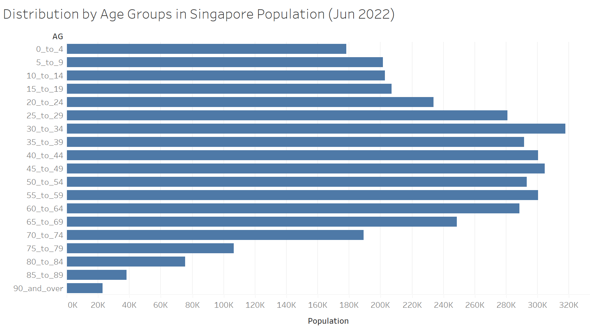
3.2 Creating male and female population variables
A single population pyramid is made by two age group distributions for both genders in a population. The dataset used currently combines the population for both genders. Hence, two new variables (‘Male Pop’ & ‘Female Pop’) are created using ‘Calcuated Field’ to represent either male or female populations only.
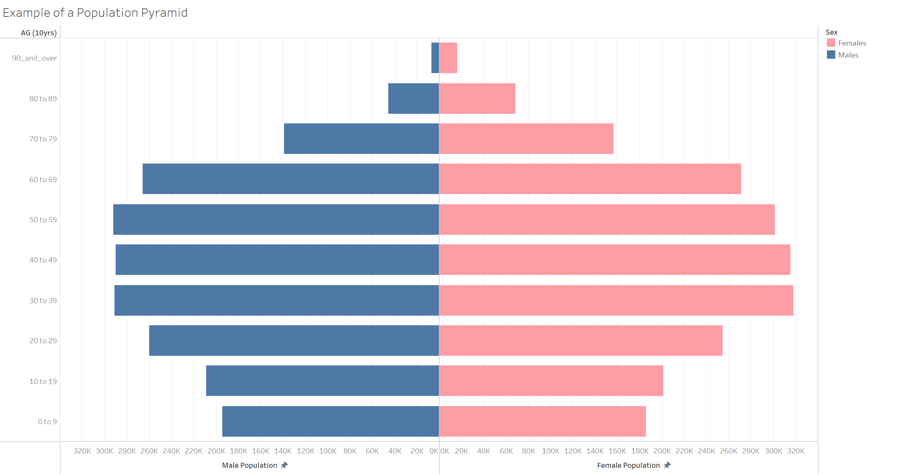
4. Population Pyramid
4.1 Selection of 9 planning areas
In this exercise, we will be studying the demographics structure in 9 planning areas with the largest populations. Large populations are chosen to ensure that we can cover as many Singaporean residents as possible for the study. We can identify these areas using the population distribution by planning areas below.

4.2 Final visualization
The 9 population pyramids are displayed in a single view using trellis display as shown below. This chart is also published on Tableau Public.
.png)
5. Observations
The following are observations revealed by the above analytical visualization:
All nine planning areas have narrower base compared to the body which shows low birth rate as there are fewer number of children than adults.
All nine planning areas have almost symmetrical halves which suggests almost equal gender ratio.
Punggol and Sengkang have considerable higher number of young children and teenagers (0 to 19 age groups) than other areas, likely due to the development of new flats in these areas.
Indents at 30 to 49 age groups for Woodlands, Tampines and Choa Chu Kang signals an outflow of working adults out of these areas.
Bulge at 30 to 49 age groups for Punggol and Sengkang indicates an influx of working adults into these two planning areas.
Bedok and Tampines have the largest number of population of 50 to 69 age groups which suggests characteristics of mature estates.
Yishun has an overall barrel like structure compared to others suggesting a more balanced ratio of the young, middle-aged and the elderlies.
Females had a longer life expectancy than males in these areas as the female population are larger than male population for age group above 80 years old.
All nine planning areas have a distinct drop for 80 to 89 age group suggesting life expectancy to be in this range.
6. Worksheet vs Dashboard
We can build a trellis display for nine population pyramids using multiple worksheets and compile into a dashboard (as shown above) or using a single worksheet (as shown below).
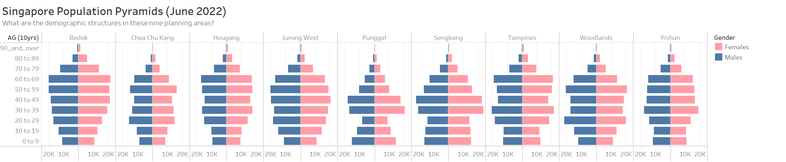
We will compare some advantages and disadvantages of each method.
Trellis display (horizontal) in Worksheet
Advantages:
i) Less steps required to build and has automated chart fitting and labeling.
ii) Easier to compare across the same age groups.
Disadvantages:
i) Requires several additional fields and complex equations to build a 3x3 grid.
ii) Pyramids are compressed to fit into the same display and could be misleading.
Trellis display in Dashboard
Advantages:
i) Larger space for each pyramids so they are not compressed.
ii) Able to custom layout to desired design without any coding.
Disadvantages:
i) Multiple worksheet adjustments are required for any changes to the pyramids.
After considering the pros and cons, trellis display in dashboard is better suited for this exercise.
7. Step-by-Step Instructions
6.1 Data preparation
| No. | Step | Illustration |
|---|---|---|
| 1. | Download csv file from Singstat website given in Section 1. Load the respopagesextod2022.csv file into Tableau Desktop by clicking ‘File’ followed by ‘Open’. | 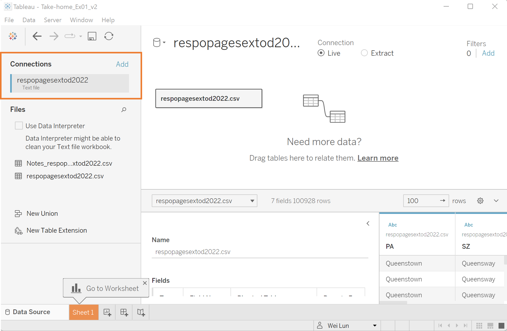 |
| 2. | Click on the drop-down arrow for ‘AG’, hover over ‘Create’ and click on ‘Group’. Create age groups in interval of 10 by grouping a pair of age groups with 5 years interval. Type ‘AG (10years)’ in ‘Field Name’ when new grouping is done. | 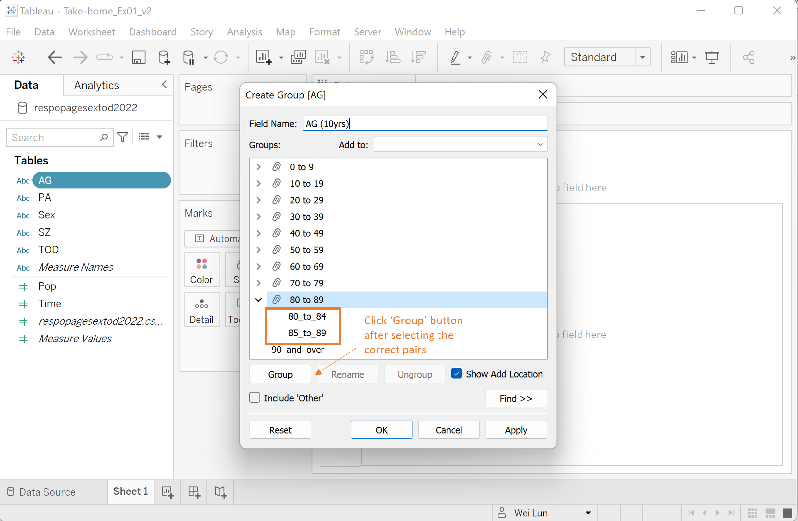 |
| 3. | Go to ‘Analysis’ and click on ‘Create Calculated Field’. Overwrite ‘Calculation1’ with ‘Male Pop’ and typed in the following formula: IF [Sex] = “Males” THEN [Pop] END Repeat this step for ‘Female Pop’ with the following formula: IF [Sex] = “Females” THEN [Pop] END |
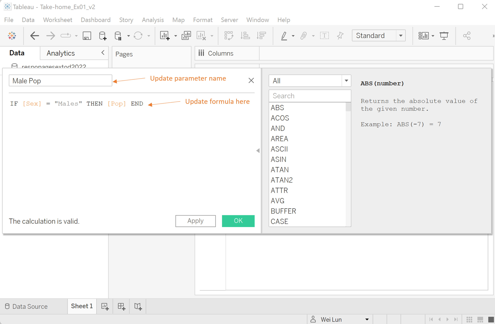 |
6.2 Creating population pyramids for 9 planning areas in dashboard
| No. | Step | Illustration |
|---|---|---|
| 1. | Create a new worksheet ‘Pyramid (3Top)’. Click and drag ‘PA’, ‘Male Pop’ & ‘Female Pop’ from Data pane to Columns. Add ‘AG(10yrs)’ to Rows. Ensure summation of ‘Male Pop’ and ‘Female Pop’ are added. | 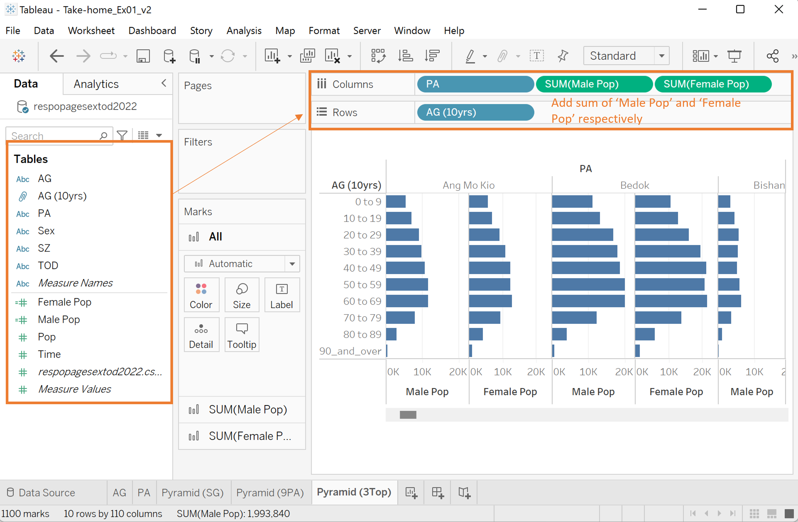 |
| 2. | Click the dropdown arrow on PA beside ‘Columns’ and select ‘Filter’. Uncheck all except the 3 selected planning area. Click ‘Ok’ once done. Hide field label for row ‘AG (10yrs) and column ’PA’. |
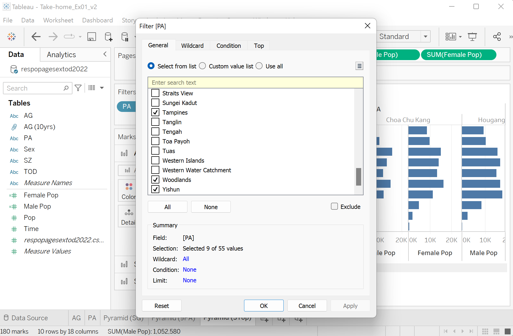 |
| 3. | Hover over AG(10yrs) on the chart. Click on the ‘AZ’ icon and sort the rows in descending order (0 to 9 at the bottom & 90 and over at the top) Right-click on one of the ‘Male Pop’ x-axis and select ‘Edit Axis’. Under Range, select ‘Fixed’ and set 0 as min and 30,000 as max. Under Scale, checked ‘Reversed’. Under Axis Titles, remove the title ‘Male Pop’. Close window once done. Right-click on one of the ‘Female Pop’ x-axis. Repeat the same steps as above for Range and Axis Titles only. Under ‘Marks’, click on ‘Color’ under ‘Sum(Female Pop)’ ribbon. Select pink color to represent female population. Select ‘Entire View’ under ‘Fit’. Your diagram should look similar to the diagram on the right. |
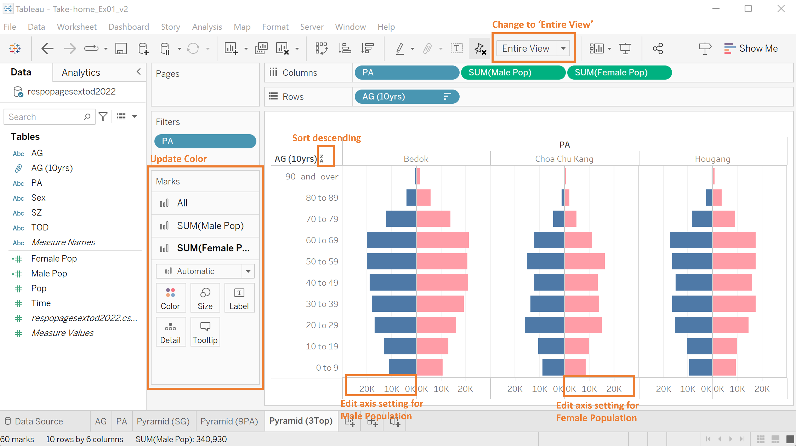 |
| 4. | Duplicate ‘Pyramid (3Top)’ and renamed worksheets as ‘Pyramid (3Mid)’ and ‘Pyramid (3Btm)’. In new workshops, update ‘PA’ filter such that the remaining 6 planning areas are all included. | 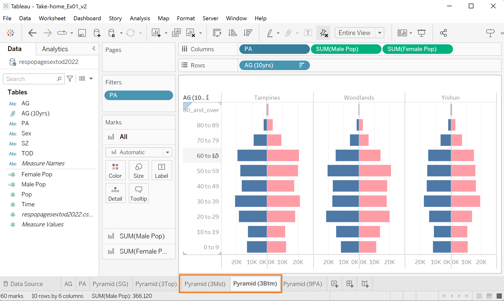 |
| 5. | Click on ‘New Dashboard’ at the bottom and rename it as ‘Dashboard (Trellis)’. Use floating objects and create a placeholders as shown in the diagram on the right. |
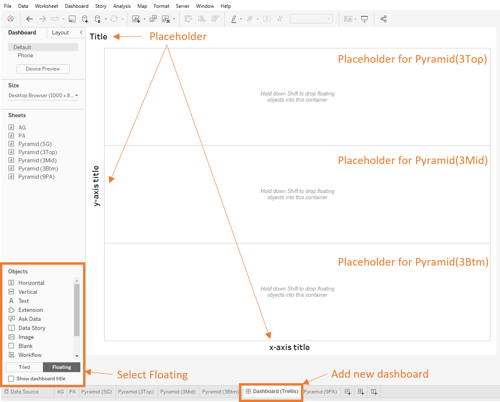 |
| 6. | Hold down shift and drag ‘Pyramid(3Top)’, ‘Pyramid (3Mid)’ and ‘Pyramid (3Btm)’ into the respective placeholders. Update the chart title and axis titles accordingly. The final diagram should look like the one on the right. | 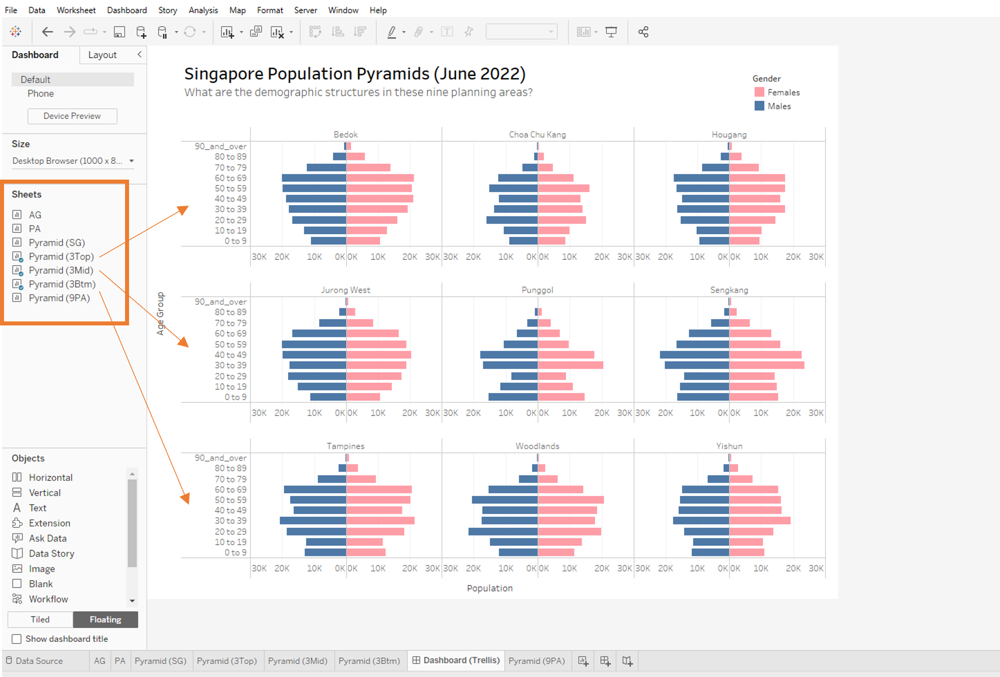 |
6.3 Creating population pyramids for 9 planning areas in a single worksheet
| No. | Step | Illustration |
|---|---|---|
| 1. | Create a new worksheet ‘Worksheet (Trellis)’. Click and drag ‘PA’, ‘Male Pop’ & ‘Female Pop’ from Data pane to Columns. Add ‘AG(10yrs)’ to Rows. Click the dropdown arrow on PA beside ‘Columns’ and select ‘Filter’. Uncheck all except the 9 selected planning area. Click ‘Ok’ once done. |
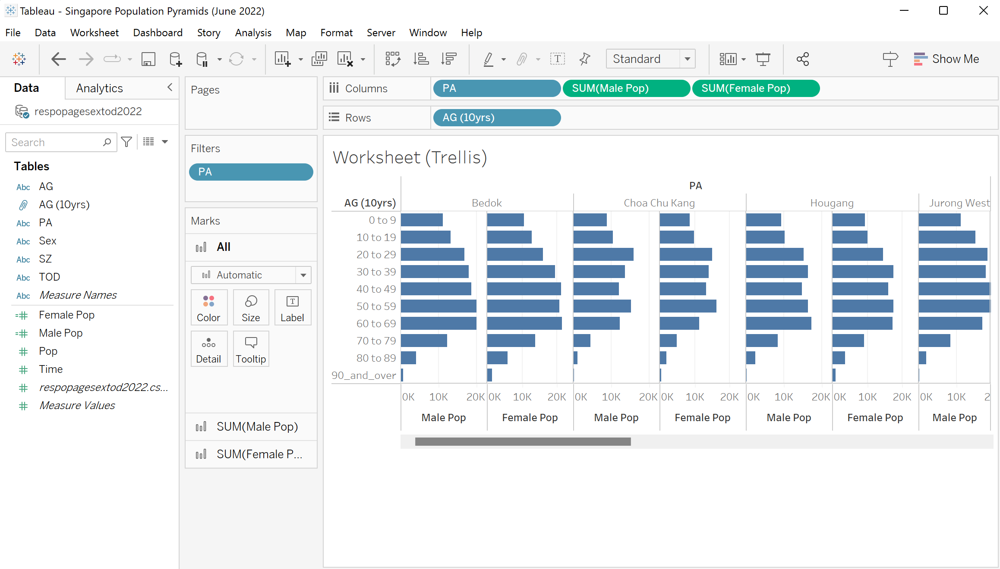 |
| 2. | Repeat the same step as Section 6.2 Step 3, except use ‘Fit Width’. The diagram should look like the one on the right. | 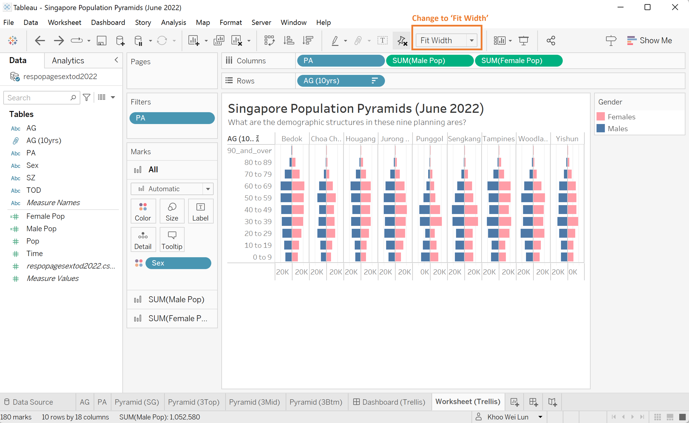 |